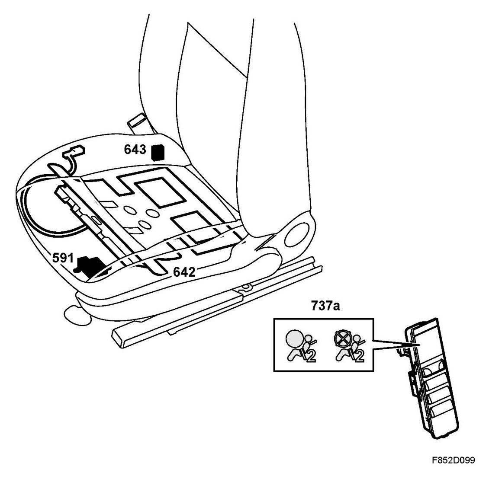

Brief Description, PPS
Brief Description, PPS
Overview

- Control module, PPS (591)
- Silicone filled seat mat with pressure sensor (642)
- Belt force sensor (643)
- Indicator lamp, passenger airbag ON/OFF in switch panel (737a)
Description
The PPS (Passenger Presence System) is part of the airbag system. PPS is used to detect whether the passenger seat is occupied by an adult or child. If the seat is empty or it is occupied by a child, the airbag control module will be informed so it can turn off the passenger airbag and side airbag.
Background
USA has introduced a new legislative requirement that regulates whether a passenger airbag/side airbag is to be activated. This legislative requirement is called FMVSS 208. PPS is a system to deactivate the passenger airbag/side airbag for all passengers up to age 6 (23.4 kg) and activate the passenger airbag/side airbag for passenger weighing 46.7 kg or more as per this legislation. In the grey zone between 23.4 kg and 46.7 kg, both activation and deactivation of the passenger airbag/side airbag are considered legally correct.
Equipment
The PPS system components comprise a silicone filled seat mat connected to a pressure sensor, a force sensor for measuring the load on the belt and two indicator diodes, passenger airbag/side airbag ON or OFF.
Location
The control module of the PPS system is located on the underside of the passenger seat. A mat, consisting of a silicon-filled seat mat and a pressure sensor, is located on the seat and the belt force sensor (643) is located on the belt anchorage. The two indicator lamps ON/OFF are located in the switch panel (737a).
Checking and activation
The PPS system control module detects the following:
- if there is a passenger in the passenger seat. Using a pressure sensor, the PPS control module will convert pressure to weight.
- if a child seat has been connected to the belt. Using the belt force sensor, the weight is recalculated as the tension caused by the child seat will affect the total weight.
With the help of this information, the PPS control module will turn on one of the two indicator lamps, depending on whether the passenger airbag/side airbag is active or not. Via a communication cable, diagnosis and status are sent to the airbag control module (ACM), which enables or disables the passenger airbag/side airbag.
The passenger airbag/side airbag will be disabled if a fault arises.